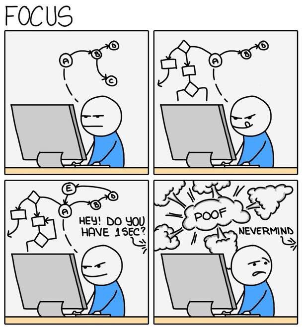
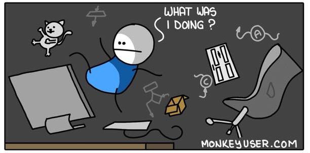
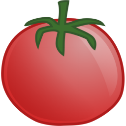
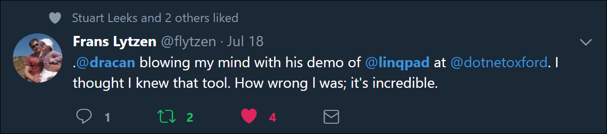

"Developer Productivity"

Developer Productivity
#devprodtalk
Snippets and Note-taking

Focus
Headphones
- Noise Cancellation
- More Immersed
- Less likely to be interrupted
- Music

Pomodoro Technique


Tomatoad
https://github.com/dracan/tomatoad
Tomatoad
https://github.com/dracan/tomatoad
Tools and Automation
LINQPad
Resharper
Using the CLI
A better Clipboard

Mindmaps
Be More Organised

Todo Lists + GTD
Einsenhower Matrix
Zero Inbox
STOP TRYING TO MULTITASK!!!
Estimates

Brain Nutrition

Notes for next day
@dracan
#devprodtalk